Candidate List 20260519 Previous Day Next Day Section 1: New Sources (age<1d) Cosmological Afterglow
Section 2: Old (1-5d) sources observed last night placeholder
Section 1: New Afterglow/FBOT Cands Last Night (2)
1. ZTF26aaxhsqh (Afterglow?) [Back to Top] [Share] [Trigger Swift] [Fritz ] [Lasair ]RA, Dec: 225.08702, -12.41996 15h 0m20.89s, -12d-25m-11.84sGalactic (l, b): 345.44376, 39.58213 WARNING: 4.46 deg from ecliptic plane ext(g-r) = 0.079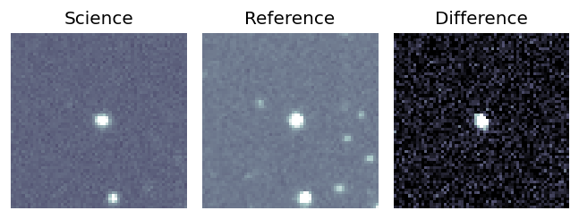
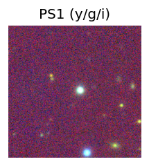
LegacySurvey: 1 sources in 3 arcsec Closest: d = 2.12 arcsec, 274.8 deg (east of north) photoz=0.04 (68% bounds 0.02, 0.07), type=PSF peak abs mag = -19.19 (68% bounds -17.87, -20.2) 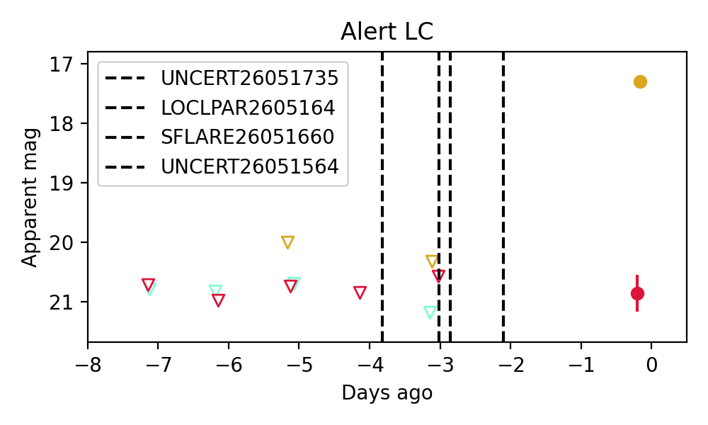
Consistent with synchrotron, g-r>0!
2. ZTF26aaxhwhr (Afterglow?) [Back to Top] [Share] [Trigger Swift] [Fritz ] [Lasair ]RA, Dec: 251.24251, -12.02058 16h44m58.20s, -12d-1m-14.07sGalactic (l, b): 6.21823, 21.1844 ext(g-r) = 0.555 Consistent with synchrotron, g-r>0!
Section 2: Older Sources Observed Last Night (23)
0. ZTF26aawfdna (Afterglow?) [Back to Top] [Share] [Trigger Swift] [Fritz ] [Lasair ]RA, Dec: 212.31908, 76.64907 14h 9m16.58s, 76d38m56.65sGalactic (l, b): 117.20196, 39.60061 ext(g-r) = 0.037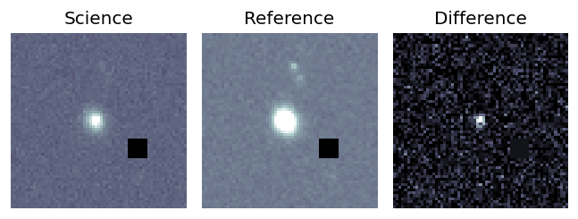
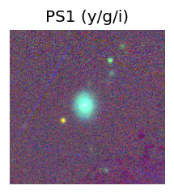
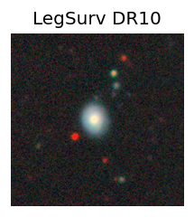
PS1: 1 source in 3 arcsec Closest: d = 1.15 arcsec photoz=0.09+/-0.01 peak abs mag = -19.49 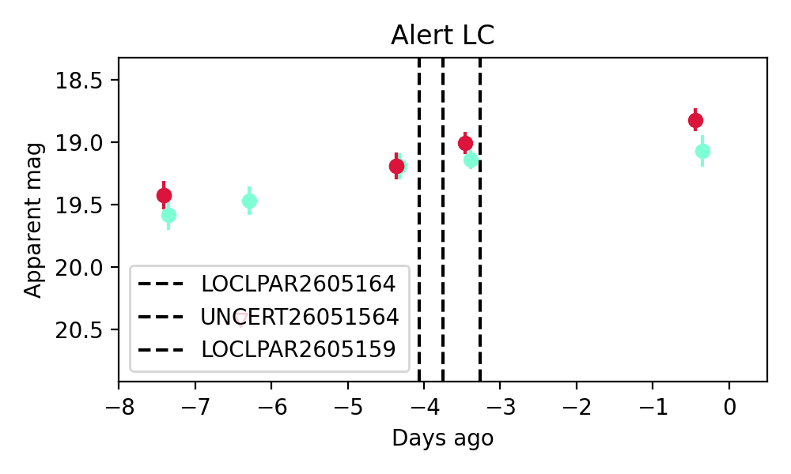
Consistent with synchrotron, g-r>0!
1. ZTF26aawfmno (Afterglow?) [Back to Top] [Share] [Trigger Swift] [Fritz ] [Lasair ]RA, Dec: 171.77372, 43.61359 11h27m5.69s, 43d36m48.91sGalactic (l, b): 163.34853, 66.31219 ext(g-r) = 0.025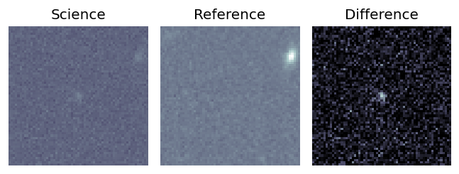
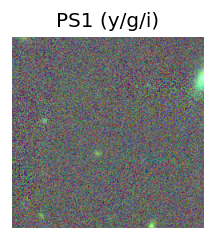
peak abs mag = -23.22 PS1: 1 source in 3 arcsec Closest: d = 7.84 arcsec photoz=0.68+/-0.10 peak abs mag = -23.98 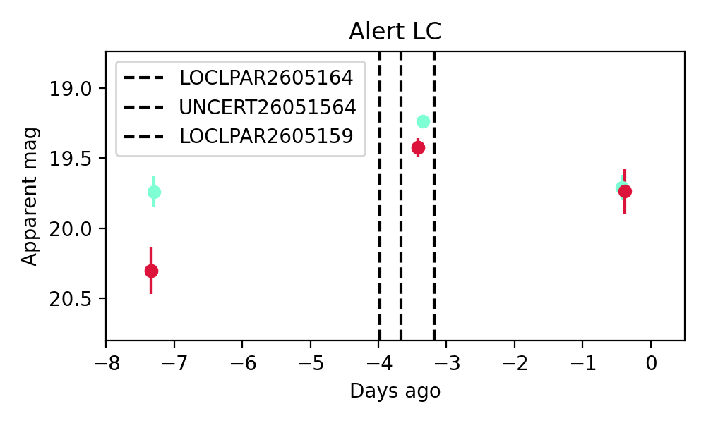
Consistent with synchrotron, g-r>0!
2. ZTF26aawfwqy (Afterglow?) [Back to Top] [Share] [Trigger Swift] [Fritz ] [Lasair ]RA, Dec: 251.39884, 19.6753 16h45m35.72s, 19d40m31.08sGalactic (l, b): 38.30617, 36.22103 ext(g-r) = 0.086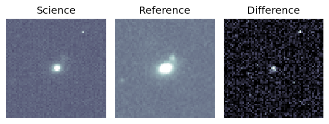
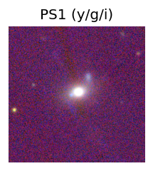
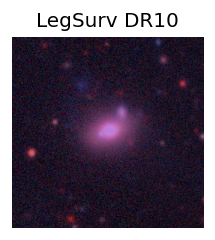
peak abs mag = -18.87 LegacySurvey: 1 sources in 3 arcsec Closest: d = 0.83 arcsec, 312.6 deg (east of north) photoz=0.09 (68% bounds 0.08, 0.09), type=SER peak abs mag = -18.77 (68% bounds -18.64, -18.87) 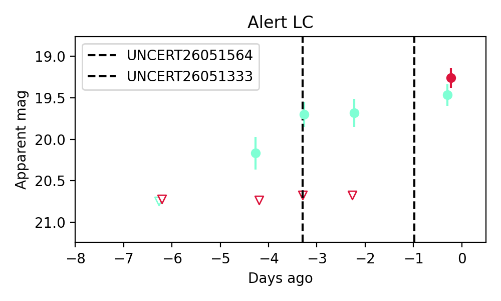
Consistent with synchrotron, g-r>0!
3. ZTF26aawfzvt (Afterglow?) [Back to Top] [Share] [Trigger Swift] [Fritz ] [Lasair ]RA, Dec: 233.63059, 31.61735 15h34m31.34s, 31d37m2.45sGalactic (l, b): 50.16546, 54.39125 ext(g-r) = 0.027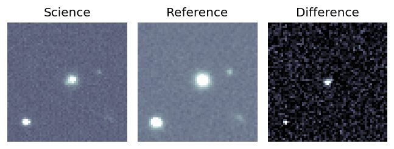
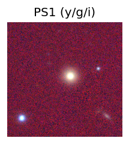
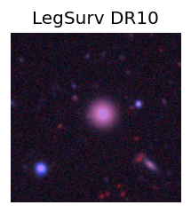
peak abs mag = -19.11 LegacySurvey: 1 sources in 3 arcsec Closest: d = 3.07 arcsec, 296.4 deg (east of north) photoz=0.07 (68% bounds 0.07, 0.08), type=SER peak abs mag = -18.95 (68% bounds -18.72, -19.16) 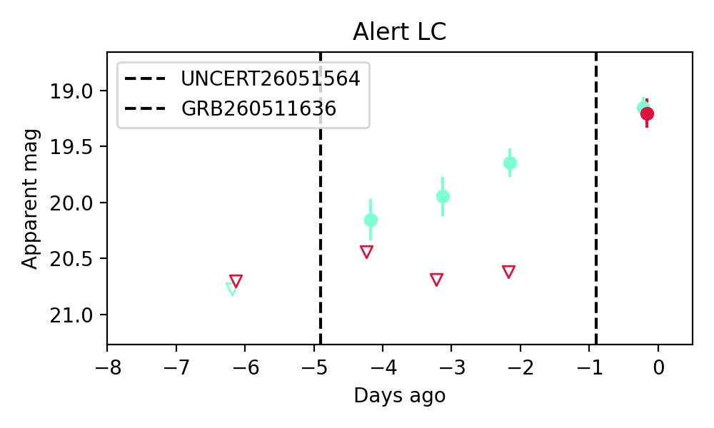
Consistent with synchrotron, g-r>0!
4. ZTF26aawiode (FBOT?) [Back to Top] [Share] [Trigger Swift] [Fritz ] [Lasair ]RA, Dec: 201.21454, 46.11012 13h24m51.49s, 46d 6m36.44sGalactic (l, b): 105.88933, 69.89646 ext(g-r) = 0.025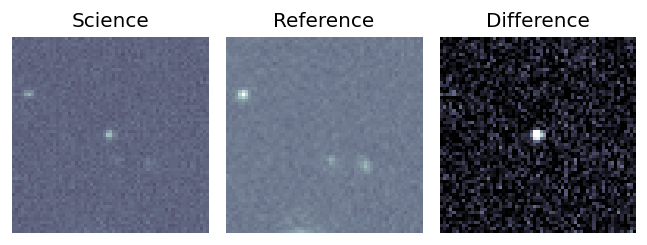
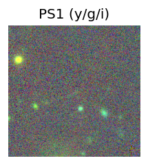
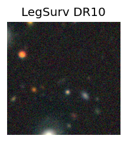
PS1: 1 source in 3 arcsec Closest: d = 8.81 arcsec photoz=0.77+/-0.13 peak abs mag = -25.19 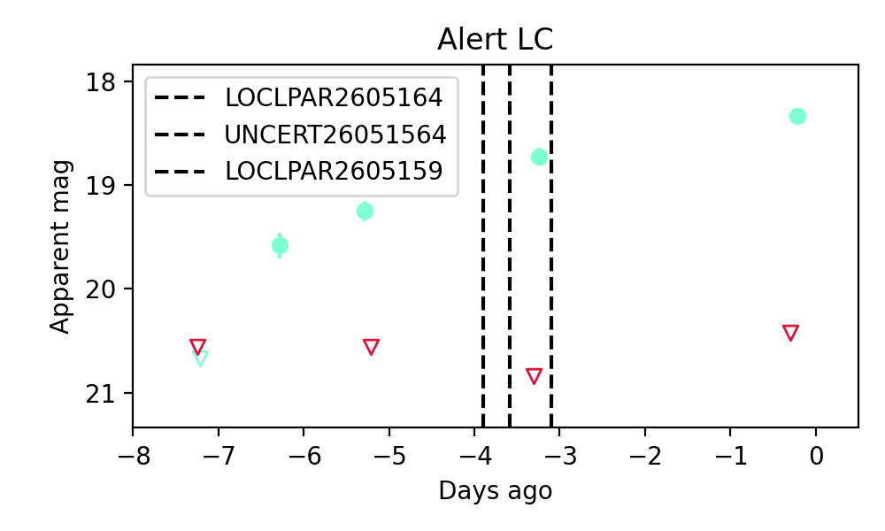
5. ZTF26aawtbkb (Afterglow?) [Back to Top] [Share] [Trigger Swift] [Fritz ] [Lasair ]RA, Dec: 185.84965, 12.94603 12h23m23.92s, 12d56m45.69sGalactic (l, b): 276.7293, 74.37349 ext(g-r) = 0.046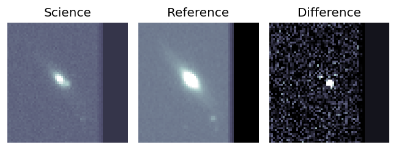
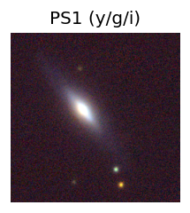
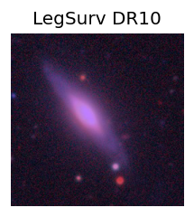
peak abs mag = -18.99 LegacySurvey: 1 sources in 3 arcsec Closest: d = 5.07 arcsec, 64.7 deg (east of north) photoz=0.03 (68% bounds 0.03, 0.04), type=SER peak abs mag = -18.15 (68% bounds -17.71, -18.66) 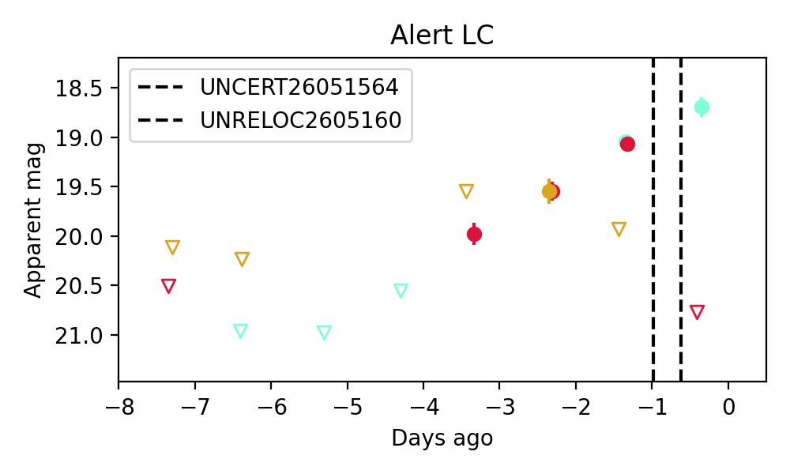
6. ZTF26aawtwql (FBOT?) [Back to Top] [Share] [Trigger Swift] [Fritz ] [Lasair ]RA, Dec: 228.87648, -14.50352 15h15m30.35s, -14d-30m-12.68sGalactic (l, b): 347.4001, 35.64233 WARNING: 3.46 deg from ecliptic plane ext(g-r) = 0.141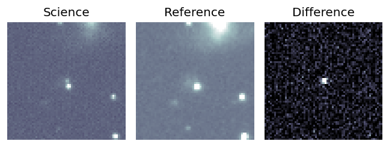
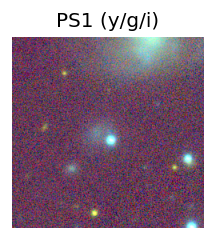
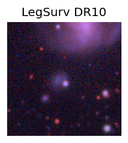
LegacySurvey: 1 sources in 3 arcsec Closest: d = 0.13 arcsec, 239.4 deg (east of north) photoz=0.09 (68% bounds 0.05, 0.21), type=REX peak abs mag = -19.43 (68% bounds -18.14, -21.44) 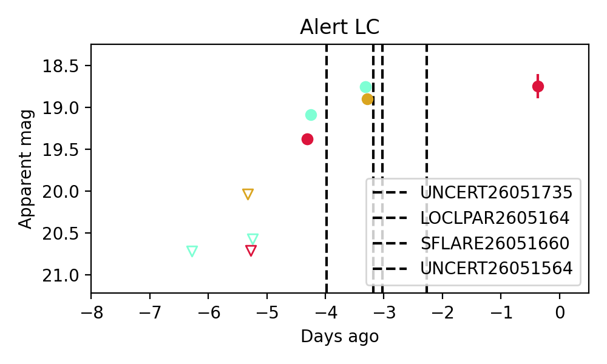
7. ZTF26aawvxly (Afterglow?) [Back to Top] [Share] [Trigger Swift] [Fritz ] [Lasair ]RA, Dec: 213.31452, 43.67039 14h13m15.48s, 43d40m13.41sGalactic (l, b): 83.32791, 66.63832 ext(g-r) = 0.008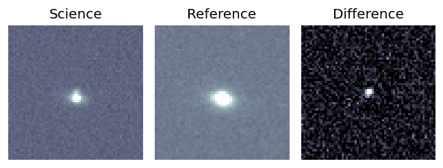
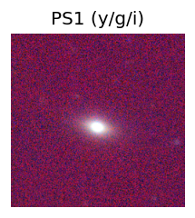
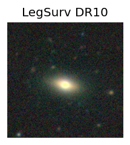
peak abs mag = -18.83 PS1: 1 source in 3 arcsec Closest: d = 2.97 arcsec photoz=0.07+/-0.01 peak abs mag = -18.43 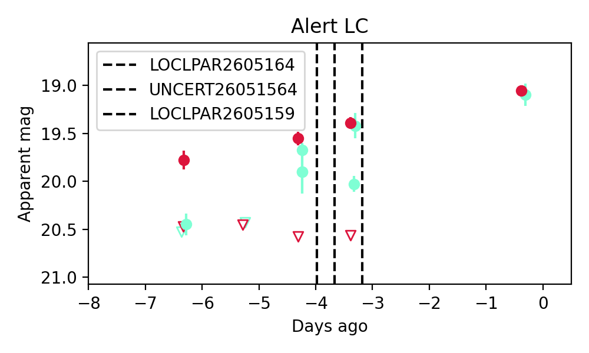
Consistent with synchrotron, g-r>0!
8. ZTF26aawywnt (Afterglow?FBOT?) [Back to Top] [Share] [Trigger Swift] [Fritz ] [Lasair ]RA, Dec: 184.00416, 12.58144 12h16m1.00s, 12d34m53.18sGalactic (l, b): 271.50376, 73.25351 ext(g-r) = 0.036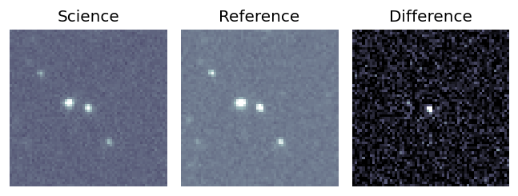
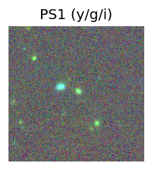
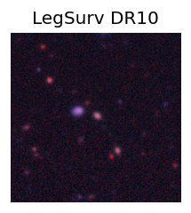
peak abs mag = -20.80 LegacySurvey: 1 sources in 3 arcsec Closest: d = 0.81 arcsec, 314.7 deg (east of north) photoz=0.26 (68% bounds 0.25, 0.27), type=SER peak abs mag = -20.45 (68% bounds -20.31, -20.59) 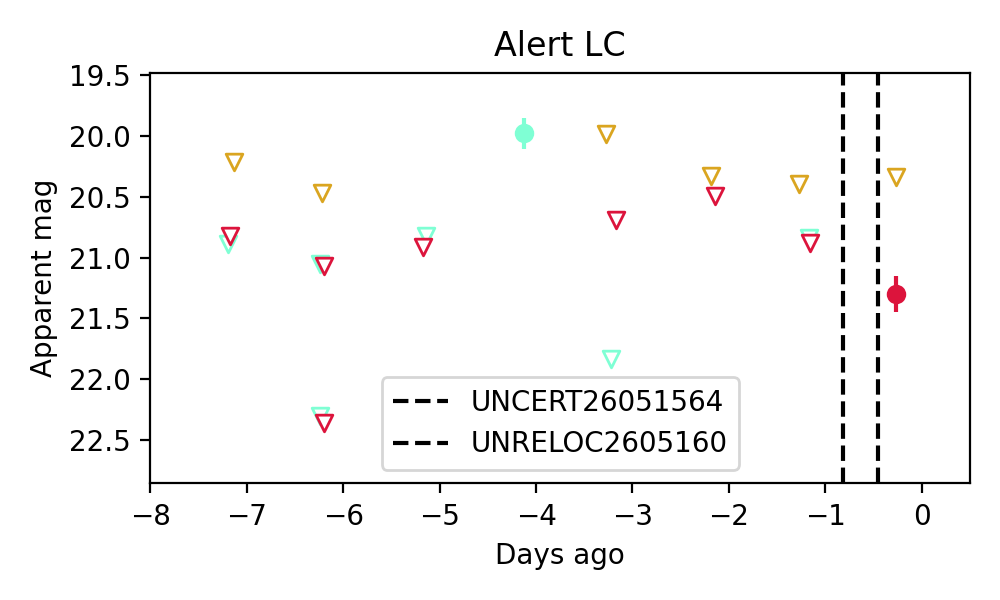
Consistent with synchrotron, g-r>0!
9. ZTF26aawzcwt (FBOT?) [Back to Top] [Share] [Trigger Swift] [Fritz ] [Lasair ]RA, Dec: 171.38251, 45.57189 11h25m31.80s, 45d34m18.81sGalactic (l, b): 160.06013, 64.8741 ext(g-r) = 0.02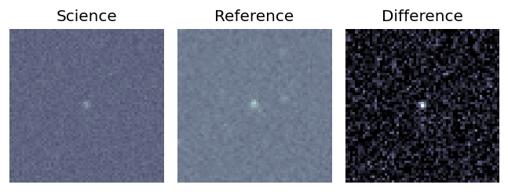
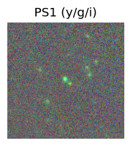
peak abs mag = -19.44 PS1: 1 source in 3 arcsec Closest: d = 0.52 arcsec photoz=0.39+/-0.24 peak abs mag = -21.80 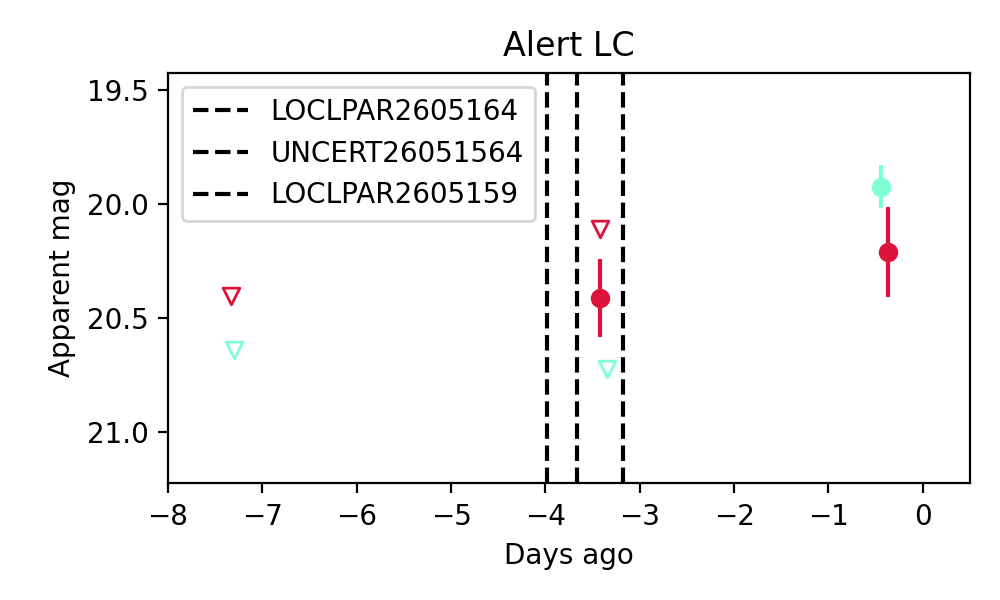
10. ZTF26aawzpcp (FBOT?) [Back to Top] [Share] [Trigger Swift] [Fritz ] [Lasair ]RA, Dec: 185.98626, 21.20115 12h23m56.70s, 21d12m4.12sGalactic (l, b): 254.86014, 81.37497 ext(g-r) = 0.026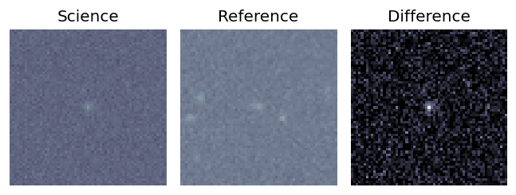
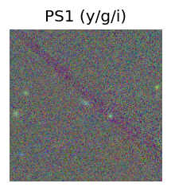
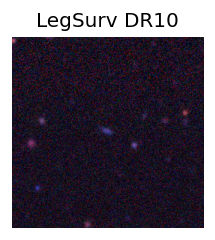
peak abs mag = -20.56 LegacySurvey: 1 sources in 3 arcsec Closest: d = 0.54 arcsec, 44.3 deg (east of north) photoz=0.19 (68% bounds 0.12, 0.25), type=EXP peak abs mag = -20.67 (68% bounds -19.56, -21.38) 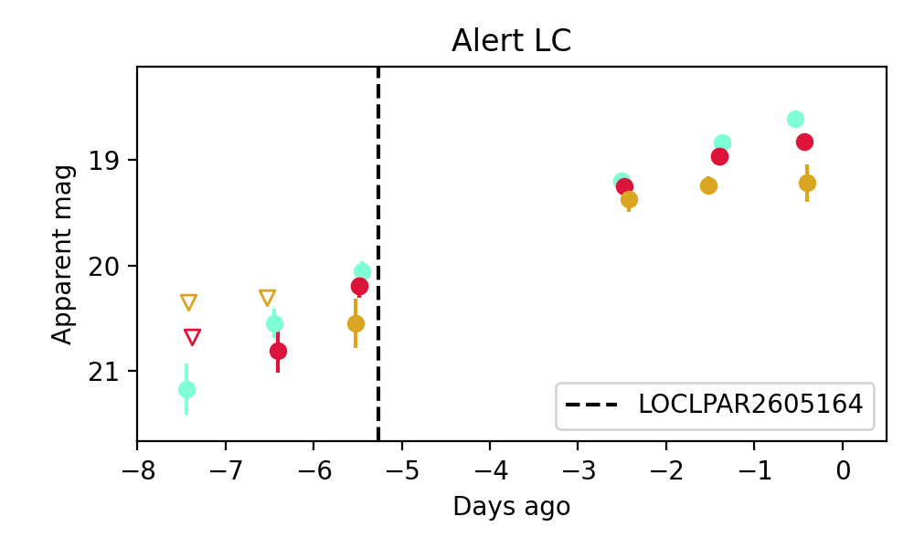
Consistent with synchrotron, g-r>0!
11. ZTF26aawzvtx (FBOT?) [Back to Top] [Share] [Trigger Swift] [Fritz ] [Lasair ]RA, Dec: 213.42251, -3.2812 14h13m41.40s, -3d-16m-52.32sGalactic (l, b): 339.24321, 53.6894 ext(g-r) = 0.063peak abs mag = -20.13 LegacySurvey: 1 sources in 3 arcsec Closest: d = 1.01 arcsec, 211.4 deg (east of north) photoz=0.17 (68% bounds 0.12, 0.2), type=REX peak abs mag = -20.34 (68% bounds -19.55, -20.76)
12. ZTF26aawzwus (FBOT?) [Back to Top] [Share] [Trigger Swift] [Fritz ] [Lasair ]RA, Dec: 205.23635, 8.31931 13h40m56.72s, 8d19m9.53sGalactic (l, b): 337.14448, 67.83972 ext(g-r) = 0.032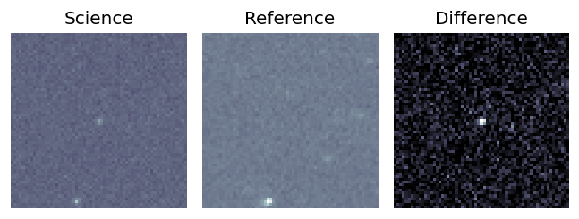
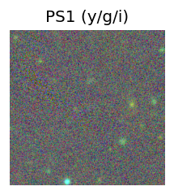
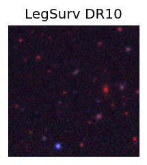
LegacySurvey: 1 sources in 3 arcsec Closest: d = 0.83 arcsec, 215.0 deg (east of north) photoz=1.19 (68% bounds 0.61, 1.59), type=REX peak abs mag = -24.61 (68% bounds -22.82, -25.39) 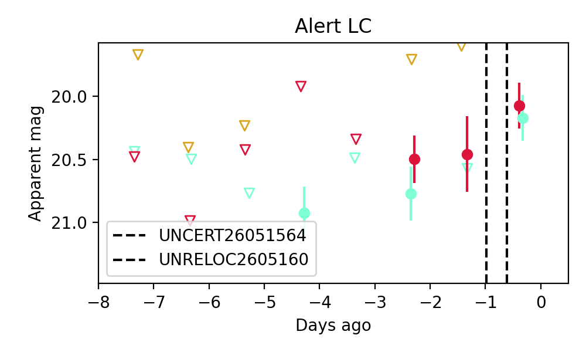
Consistent with synchrotron, g-r>0!
13. ZTF26aaxarkd (FBOT?) [Back to Top] [Share] [Trigger Swift] [Fritz ] [Lasair ]RA, Dec: 185.79853, 14.84247 12h23m11.65s, 14d50m32.90sGalactic (l, b): 273.36458, 76.06604 ext(g-r) = 0.036peak abs mag = -19.53 LegacySurvey: 1 sources in 3 arcsec Closest: d = 0.07 arcsec, 231.1 deg (east of north) photoz=0.19 (68% bounds 0.18, 0.19), type=SER peak abs mag = -19.49 (68% bounds -19.39, -19.59) Consistent with synchrotron, g-r>0!
14. ZTF26aaxasvg (Afterglow?FBOT?) [Back to Top] [Share] [Trigger Swift] [Fritz ] [Lasair ]RA, Dec: 206.77515, 18.25421 13h47m6.04s, 18d15m15.14sGalactic (l, b): 1.14186, 74.41306 ext(g-r) = 0.025peak abs mag = -18.09 LegacySurvey: 1 sources in 3 arcsec Closest: d = 0.48 arcsec, 83.0 deg (east of north) photoz=0.38 (68% bounds 0.23, 0.72), type=EXP peak abs mag = -22.07 (68% bounds -20.83, -23.71) Consistent with synchrotron, g-r>0!
15. ZTF26aaxbgss (Afterglow?) [Back to Top] [Share] [Trigger Swift] [Fritz ] [Lasair ]RA, Dec: 228.22017, 15.31785 15h12m52.84s, 15d19m4.27sGalactic (l, b): 20.45123, 55.1331 ext(g-r) = 0.028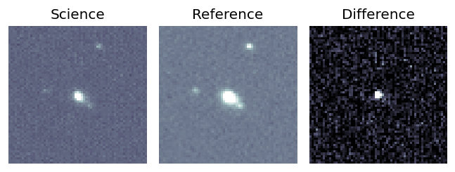
peak abs mag = -18.74 LegacySurvey: 1 sources in 3 arcsec Closest: d = 1.45 arcsec, 216.2 deg (east of north) photoz=0.07 (68% bounds 0.06, 0.08), type=SER peak abs mag = -19.0 (68% bounds -18.7, -19.23) Consistent with synchrotron, g-r>0!
16. ZTF26aaxbiht (FBOT?) [Back to Top] [Share] [Trigger Swift] [Fritz ] [Lasair ]RA, Dec: 223.24903, 27.89602 14h52m59.77s, 27d53m45.66sGalactic (l, b): 41.67629, 63.1054 ext(g-r) = 0.03peak abs mag = -18.97 LegacySurvey: 1 sources in 3 arcsec Closest: d = 1.38 arcsec, 303.0 deg (east of north) photoz=0.16 (68% bounds 0.11, 0.19), type=EXP peak abs mag = -19.54 (68% bounds -18.8, -20.05) Consistent with synchrotron, g-r>0!
17. ZTF26aaxgfco (FBOT?) [Back to Top] [Share] [Trigger Swift] [Fritz ] [Lasair ]RA, Dec: 187.83374, 6.44208 12h31m20.10s, 6d26m31.49sGalactic (l, b): 289.02257, 68.76921 ext(g-r) = 0.019LegacySurvey: 1 sources in 3 arcsec Closest: d = 1.29 arcsec, 313.9 deg (east of north) photoz=0.63 (68% bounds 0.48, 0.8), type=REX peak abs mag = -21.77 (68% bounds -21.05, -22.38)
18. ZTF26aaxggeq (Afterglow?) [Back to Top] [Share] [Trigger Swift] [Fritz ] [Lasair ]RA, Dec: 183.01101, 8.30373 12h12m2.64s, 8d18m13.43sGalactic (l, b): 274.76001, 68.9925 ext(g-r) = 0.016peak abs mag = -17.97 LegacySurvey: 1 sources in 3 arcsec Closest: d = 3.58 arcsec, 195.8 deg (east of north) photoz=0.1 (68% bounds 0.09, 0.13), type=SER peak abs mag = -18.0 (68% bounds -17.6, -18.43) Consistent with synchrotron, g-r>0!
19. ZTF26aaxgluz (Afterglow?FBOT?) [Back to Top] [Share] [Trigger Swift] [Fritz ] [Lasair ]RA, Dec: 175.42865, -4.13119 11h41m42.88s, -4d-7m-52.28sGalactic (l, b): 271.97171, 54.49489 ext(g-r) = 0.027LegacySurvey: 1 sources in 3 arcsec Closest: d = 0.64 arcsec, 178.9 deg (east of north) photoz=0.83 (68% bounds 0.56, 1.18), type=PSF peak abs mag = -26.42 (68% bounds -25.36, -27.35)
20. ZTF26aaxgvrl (FBOT?) [Back to Top] [Share] [Trigger Swift] [Fritz ] [Lasair ]RA, Dec: 187.02281, 14.76991 12h28m5.47s, 14d46m11.69sGalactic (l, b): 278.02154, 76.49923 ext(g-r) = 0.043peak abs mag = -19.28 LegacySurvey: 1 sources in 3 arcsec Closest: d = 0.60 arcsec, 333.4 deg (east of north) photoz=0.39 (68% bounds 0.28, 0.5), type=REX peak abs mag = -20.65 (68% bounds -19.81, -21.28)
21. ZTF26aaxhrny (FBOT?) [Back to Top] [Share] [Trigger Swift] [Fritz ] [Lasair ]RA, Dec: 221.60774, -26.5779 14h46m25.86s, -26d-34m-40.44sGalactic (l, b): 332.57916, 29.59198 ext(g-r) = 0.137LegacySurvey: 1 sources in 3 arcsec Closest: d = 1.09 arcsec, 94.2 deg (east of north) photoz=1.1 (68% bounds 0.87, 1.27), type=REX peak abs mag = -26.74 (68% bounds -26.12, -27.14)
22. ZTF26aaxihhw (FBOT?) [Back to Top] [Share] [Trigger Swift] [Fritz ] [Lasair ]RA, Dec: 252.78525, -3.12784 16h51m8.46s, -3d-7m-40.22sGalactic (l, b): 15.17426, 24.86284 ext(g-r) = 0.304PS1: 1 source in 3 arcsec Closest: d = 2.70 arcsec photoz=0.11+/-0.02 peak abs mag = -19.75